(84548, 22)
<class 'pandas.core.frame.DataFrame'>
RangeIndex: 84548 entries, 0 to 84547
Data columns (total 22 columns):
# Column Non-Null Count Dtype
--- ------ -------------- -----
0 Unnamed: 0 84548 non-null int64
1 BOROUGH 84548 non-null int64
2 NEIGHBORHOOD 84548 non-null object
3 BUILDING CLASS CATEGORY 84548 non-null object
4 TAX CLASS AT PRESENT 84548 non-null object
5 BLOCK 84548 non-null int64
6 LOT 84548 non-null int64
7 EASE-MENT 84548 non-null object
8 BUILDING CLASS AT PRESENT 84548 non-null object
9 ADDRESS 84548 non-null object
10 APARTMENT NUMBER 84548 non-null object
11 ZIP CODE 84548 non-null int64
12 RESIDENTIAL UNITS 84548 non-null int64
13 COMMERCIAL UNITS 84548 non-null int64
14 TOTAL UNITS 84548 non-null int64
15 LAND SQUARE FEET 84548 non-null object
16 GROSS SQUARE FEET 84548 non-null object
17 YEAR BUILT 84548 non-null int64
18 TAX CLASS AT TIME OF SALE 84548 non-null int64
19 BUILDING CLASS AT TIME OF SALE 84548 non-null object
20 SALE PRICE 84548 non-null object
21 SALE DATE 84548 non-null object
dtypes: int64(10), object(12)
memory usage: 14.2+ MB
NoneProperty Sales Price Prediction
Research Topic
Predicted the price of property before it sells is incredibly important for everyone involved in the real estate market. Whether its the sellers, buyers, real estate agents, or listing websites like Zillow, figuring out what to sell or buy a home for is incredibly important. Building models to predict these selling prices would be advantageous to everyone on the market. We are analyzing a from New York City’s department of finace, which has a record of every property that was sold from August 2016 to August 2017. This dataset was initially found on kaggle. We are going to analyze the different factors present in our dataset to predict the sales price of the building in New York City. The aim of this project is to find relations and patterns of sales price w.r.t. various other factors to have a clear understanding of property price in NYC, and hopefully will help property companies or citizens that has interest in purchasing property at New York to have a prospect for the NY property price trend in the future.
SMART Questions:
- What type(s) of location variable(s) (Eg. block, borough, neighborhood) will affect the selling price most? (can answer by modeling)
- How is the sale price of commercial property different from the sale price of residential property?
- How is accuracy different if different machine learning models like linear regression, logistic regression, and random forest are applied?
After exploring the data more, we mainly focused on the last question to build a model to accurately predict sale price.
Importing Libraries
Importing Data
We imported the data about New York properties and checked its basic information
This dataset has 84,548 rows and 22 columns
Dataset Pre-Processing
Before we do the EDA and build models for this dataset, we need to clean the data first
Columns Manipulation
Changing Column’s Name
We changed the columns name into lower-case for better visualization and convenience.
<class 'pandas.core.frame.DataFrame'>
RangeIndex: 84548 entries, 0 to 84547
Data columns (total 22 columns):
# Column Non-Null Count Dtype
--- ------ -------------- -----
0 unnamed 84548 non-null int64
1 borough 84548 non-null int64
2 neighborhood 84548 non-null object
3 building_class_category 84548 non-null object
4 tax_class_at_present 84548 non-null object
5 block 84548 non-null int64
6 lot 84548 non-null int64
7 easement 84548 non-null object
8 building_class_at_present 84548 non-null object
9 address 84548 non-null object
10 apartment_number 84548 non-null object
11 zip_code 84548 non-null int64
12 residential_units 84548 non-null int64
13 commercial_units 84548 non-null int64
14 total_units 84548 non-null int64
15 land_square_feet 84548 non-null object
16 gross_square_feet 84548 non-null object
17 year_built 84548 non-null int64
18 tax_class_at_time_of_sale 84548 non-null int64
19 building_class_at_time_of_sale 84548 non-null object
20 sale_price 84548 non-null object
21 sale_date 84548 non-null object
dtypes: int64(10), object(12)
memory usage: 14.2+ MBChanging column’s data type
There are too many columns with inappropriate data types, so we need to convert them to the appropriate data type:
- We converted land and gross square feet, property sales price, the number of residential, commercial and total units into continous variables. We will also coerce non-numeric values (such as -) to NaN for better recognition.
- We converted variables that represent different locations like borough, neighborhood and zip code into categorical variable; we also converted variables represented different building categories, and different building tax categories into categorical variables
Creating Some New Features:
We created a new column for percentage of residential units.
1.000000 57072
0.000000 5021
0.666667 908
0.500000 560
0.750000 232
...
0.991453 1
0.468750 1
0.986631 1
0.346154 1
0.940000 1
Name: percent_residential_units, Length: 180, dtype: int64We created another new column named ‘age’ by calculating the difference between the current year and the year it was built.
Dropping Insignificant Columns
Based on the dataset information, we can see there’s an ambiguous column called ‘Unnamed’ that we don’t know what it’s used for, and another useless column ‘easement’ which has no value in its column for our analysis of sales price, so we decided to drop them first.
Because we created a new feature called “age”, which is a better representation for the measure of a property’s history, so we can drop the column “year_built”.
Lastly, we dropped some other columns too which had similar meanings to other columns and no longer needed.
Subsetting Out Inappropriate Values
Dropping duplicates:
There were some rows where the number of commercial and residential do not equal the total units, so we can drop these due to the discrepancies.
Removing rows with TOTAL UNITS == 0 and one outlier with 2261 units:
Removing 0 square foot units:
Dropping Null Values
After we finish the column manipulation, convert columns into appropriate data type, drop useless columns and create some new features, then we can drop the null or missing values in the whole dataset.
<class 'pandas.core.frame.DataFrame'>
Int64Index: 36420 entries, 0 to 84547
Data columns (total 18 columns):
# Column Non-Null Count Dtype
--- ------ -------------- -----
0 borough 36420 non-null category
1 neighborhood 36420 non-null category
2 building_class_category 36420 non-null category
3 block 36420 non-null int64
4 lot 36420 non-null int64
5 address 36420 non-null object
6 zip_code 36420 non-null category
7 residential_units 36420 non-null int64
8 commercial_units 36420 non-null int64
9 total_units 36420 non-null int64
10 land_square_feet 36420 non-null float64
11 gross_square_feet 36420 non-null float64
12 tax_class_at_time_of_sale 36420 non-null category
13 building_class_at_time_of_sale 36420 non-null category
14 sale_price 36420 non-null float64
15 sale_date 36420 non-null object
16 percent_residential_units 36420 non-null float64
17 age 36420 non-null int64
dtypes: category(6), float64(4), int64(6), object(2)
memory usage: 3.9+ MBExploratory Data Analysis (EDA) & Visualization
Correlation Matrix
C:\Users\LENOVO\AppData\Local\Temp\ipykernel_6424\3853464610.py:1: FutureWarning: The default value of numeric_only in DataFrame.corr is deprecated. In a future version, it will default to False. Select only valid columns or specify the value of numeric_only to silence this warning.
corr = data_few_cols.corr()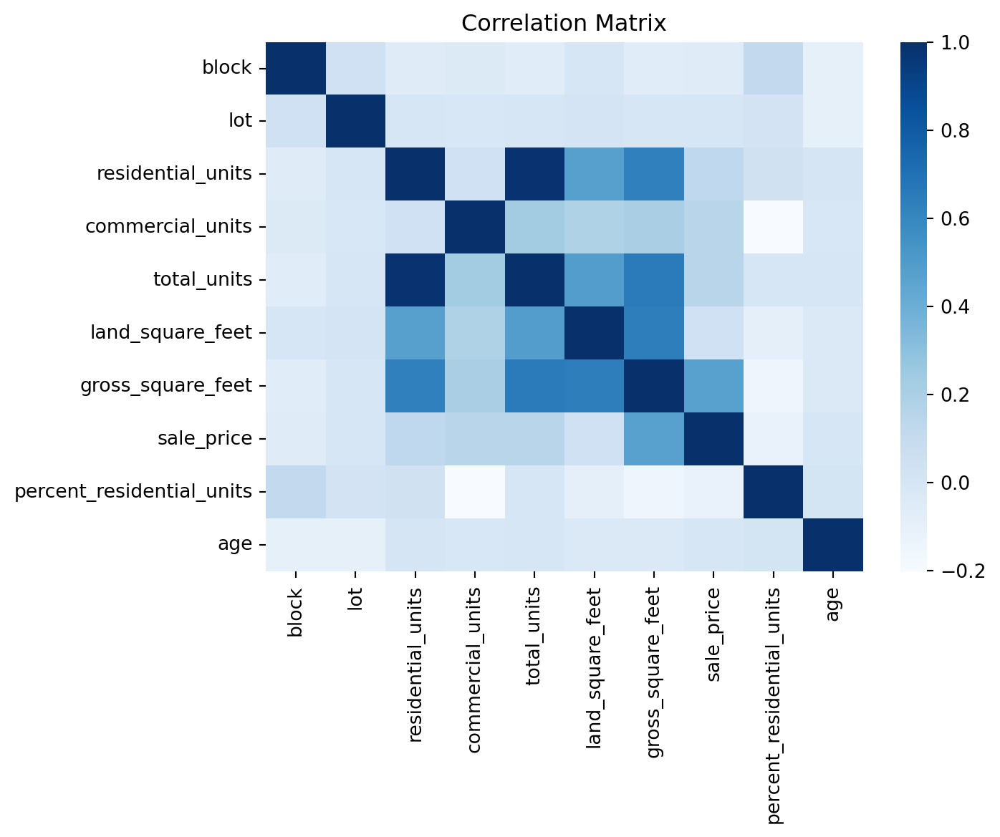
- According to the correlation matrix, we can see gross_square_feet has the strongest positive correlation with sales price.
Sales Prices Distribution
Only plotting values less than $10 million due to significant outliers (eg. 2.2 BILLION dollars) just for visualization purposes.
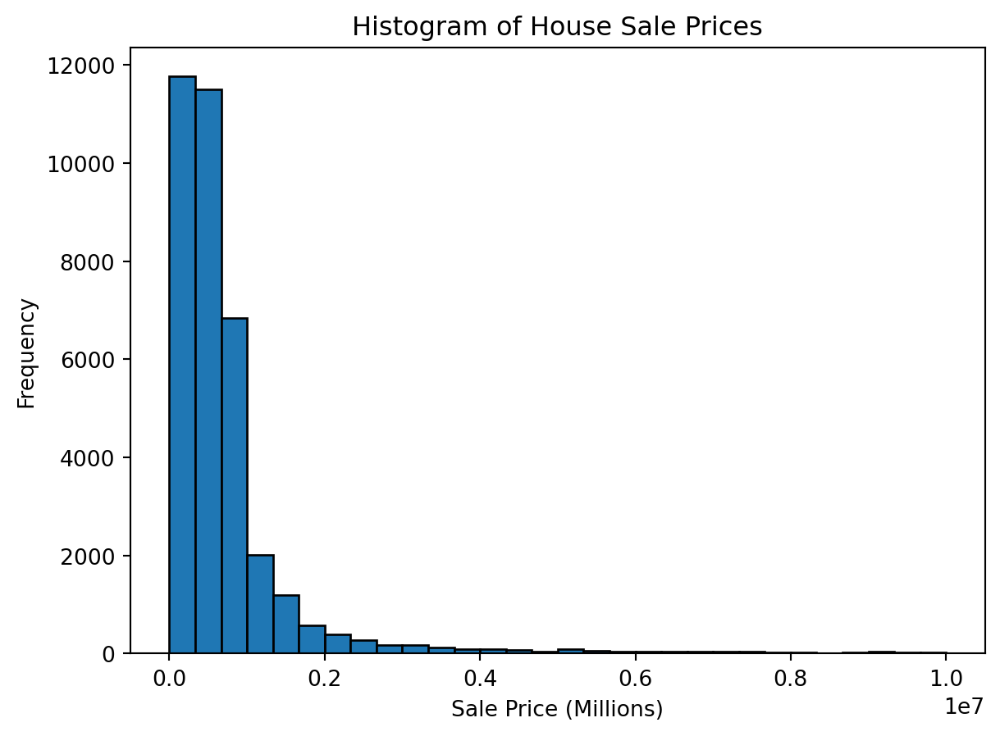
- Most of the properties are selling below 2 million dollars in New York from 2016 to 2017.
Different Districts Selling Prices
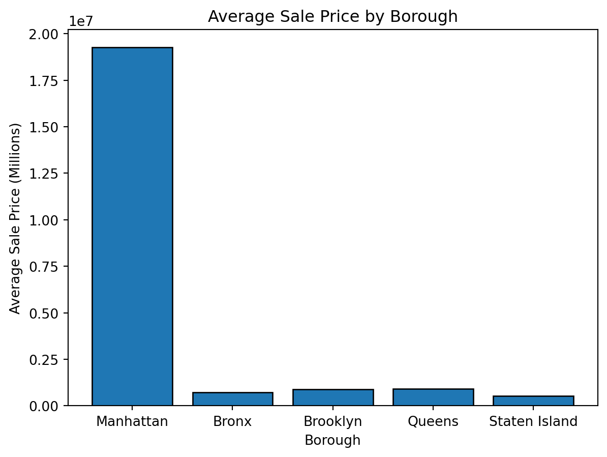
- From the plot we can see that Manhattan property price is much higher than the other boroughs, so Manhattan is the most expensive district in New York.
Violinplot for price and borough
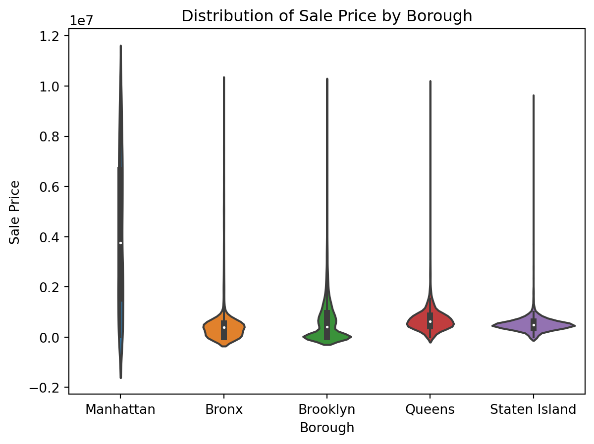
- From the violinplot, we can see that Manhattan is much skinnier as compared to others but it stretches to higher sales price.
- Skinny plot represents that there is no specific price range in which Manhattan properties are getting sold.
- Rest all the boroughs are fatter in lower sales price region.
Plotting Square Footage for < 10k and those not equal to zero
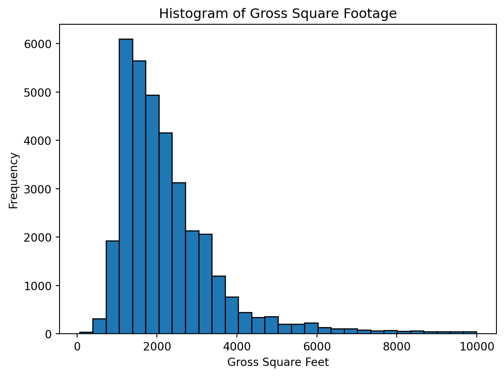
- The right skewed histogram indicating there are less values in upper end of the gross_square_feet.
Square Footage and Sale Price
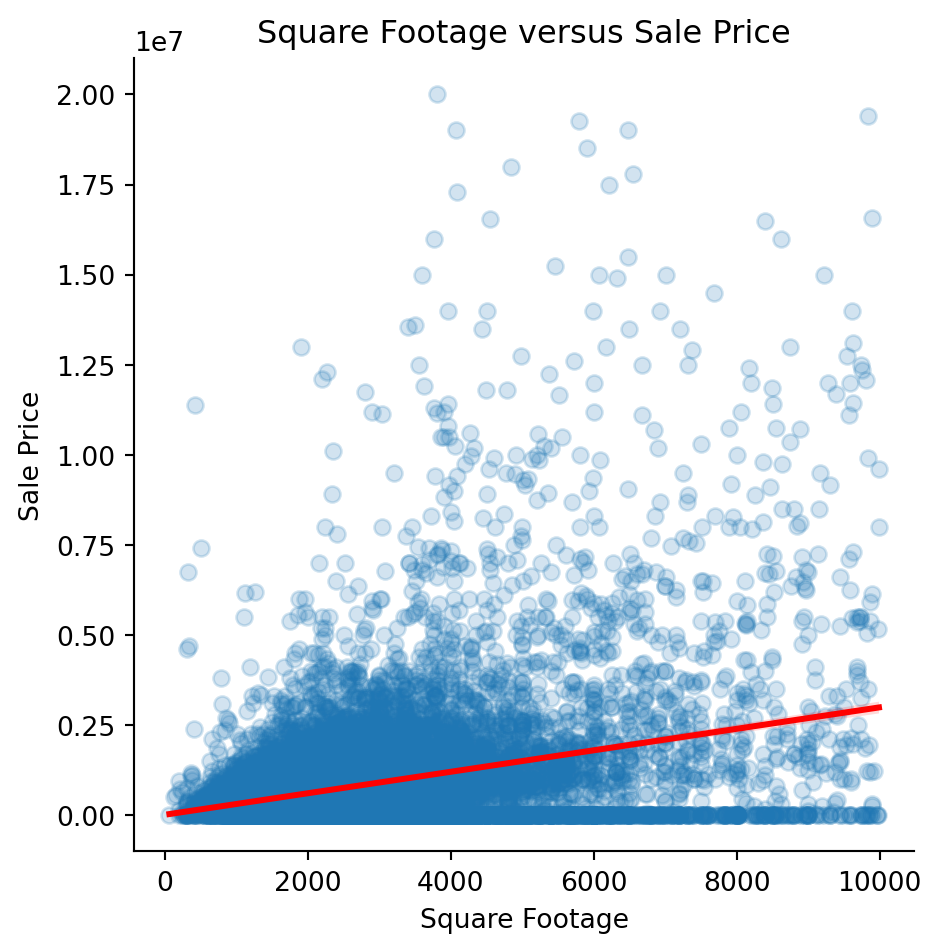
- The data points are very scattered are not aligning very well with the straight line.
Age and Sale Price
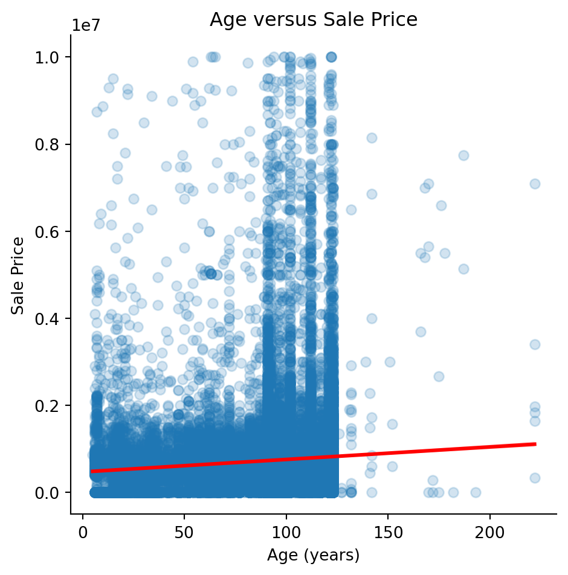
- The data points are very scattered are not aligning very well with the straight line.
Total Units and Sale Price
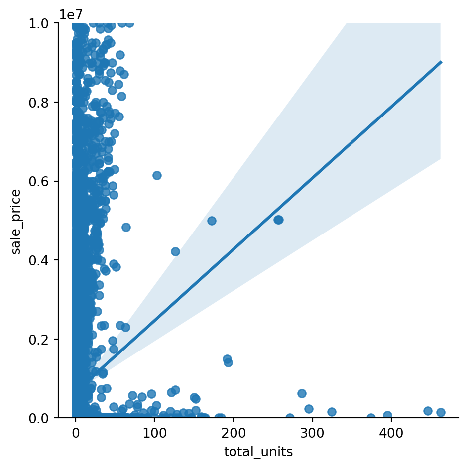
- We can see that there is a linear relation of total_units but it is not very clear as there are a lot of outliers.
Selling Price at Different Tax Classes
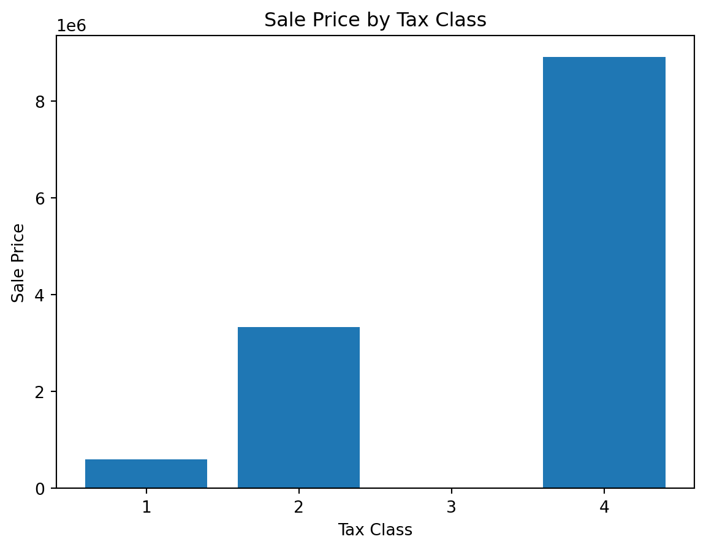
- This plot gives valuable insights with respect to different tax classes. Properties with tax class 4 has the highest selling price.
Distribution of Percent Residential Units
Not very informative but interesting as most buildings are 100% residential.
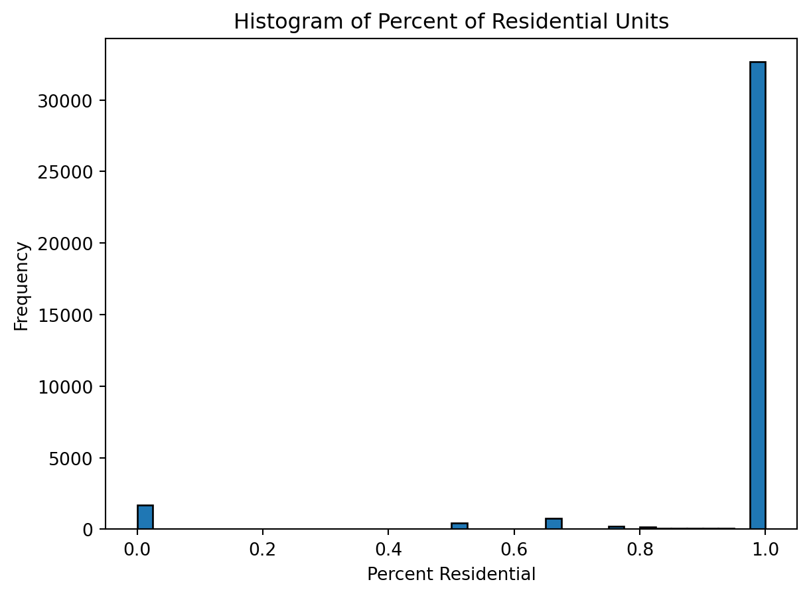
Model Building
We are going to build 4 models for predicting the sales_price of New York property, which are:
- Linear Regression
- Decision Tree
- Random Forest
- K-NN
The variables we are going to use are:
borough, building_class_category, zip_codes, total_units, percent_residential_units, age, gross_square_feet, tax_class_at_time_of_sale, building_class_at_time_of_sale, and sale_price as the response variable.
The variables we don’t use:
We didn’t use Neighborhood, block, lot and address because they have the similar information as zip_codes and borough, and we think zip_codes and borough can provide better information on location.
We didn’t use land_square_feet because we decided to use gross_sqaure_feet as a better variable for measuring the area.
Removing Outliers
Because in the EDA Section, we’ve already seen our response variable sale_price is highly right skewed, so before we build the models, we have to remove the outliers or the model will be meaningless.
We defined a function for detecting outliers, of which setting our outliers quantile below 25% and over 75%.
Number of outliers: 2743Define another function for removing outliers for dataframe.
Shape of our final cleaned dataframe is: (25744, 18)
<class 'pandas.core.frame.DataFrame'>
Int64Index: 25744 entries, 222 to 84547
Data columns (total 18 columns):
# Column Non-Null Count Dtype
--- ------ -------------- -----
0 borough 25744 non-null category
1 neighborhood 25744 non-null category
2 building_class_category 25744 non-null category
3 block 25744 non-null int64
4 lot 25744 non-null int64
5 address 25744 non-null object
6 zip_code 25744 non-null category
7 residential_units 25744 non-null int64
8 commercial_units 25744 non-null int64
9 total_units 25744 non-null int64
10 land_square_feet 25744 non-null float64
11 gross_square_feet 25744 non-null float64
12 tax_class_at_time_of_sale 25744 non-null category
13 building_class_at_time_of_sale 25744 non-null category
14 sale_price 25744 non-null float64
15 sale_date 25744 non-null object
16 percent_residential_units 25744 non-null float64
17 age 25744 non-null int64
dtypes: category(6), float64(4), int64(6), object(2)
memory usage: 2.8+ MB
Basic info of our final cleand dataframe:
NoneCheck the distribution of the sale price after teh outliers are removed.
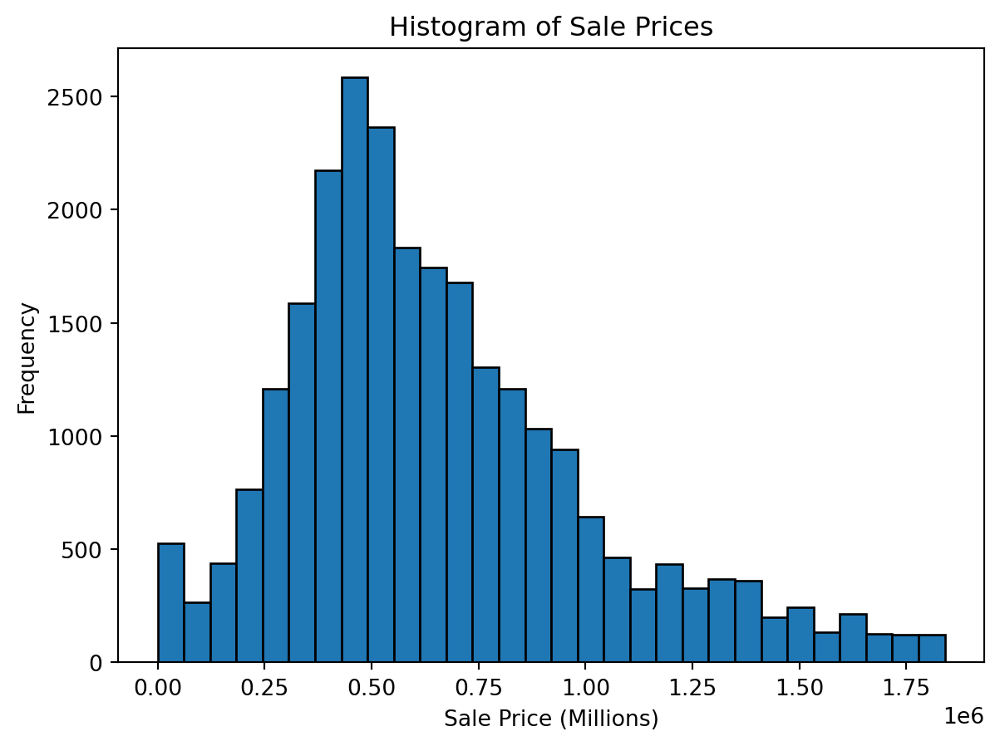
Much cleaner plot, although not exactly normal distribution but very close to normal distribution.
Train/Test Split
Before we starting to build the models, we need to split our cleaned dataframe into training set and testing set.
Also we transformed categorical variables using onehotencoding and scaled the variables using fit_transform() function.
(29136, 351)
(7284, 351)
(29136,)
(7284,)Linear Regression
We build the linear regression with the regressors we mentioned above at first, then we got a fitting result with 48% R-Squared value, which is not a really bad score. However, we want to make sure this is a useful model (predicting useful results), so we also need to check the model assumptions.
Normally shaped response: Because we defined two functions to remove the outliers for our response variable sale_price in the pre-processing section and checked its distribution on the EDA section, which is approximately normally distributed so we don’t have the problem of skewed response.
Multicollinearity: We checked the VIF values for our regressors, and we found zip_code and percentage_residential_units have extremly high VIF values (about 176 and 89 subsequently), which means we have a serious problem of multicollinearity and this can make our model prediction useless, so we removed these two regressors and checked the VIF values again and finally get every VIF values in an acceptable range (below 10).
Linearity: We checked the scatter plot between the response variable sale_price and three continuous regressors in our model structure, which are total_units, Age, and gross_square_feet. We found a clear linear relationship between property’s sales price with total units and square footage, however, we can’t see a clear linear relation between property’s sales price and property’s age. First, we decided to romove regressor Age, but this can’t increase other evaluation values, instead, it dropped our R-Squared values about 2% down, so finally we decided to keep it After we finish these checkings we build our model again with the remaining regressors: age, total_units, gross_square_feet, borough, tax_class_at_time_of_sale, building_class_at_time_of_sale, and also added two more interaction terms.
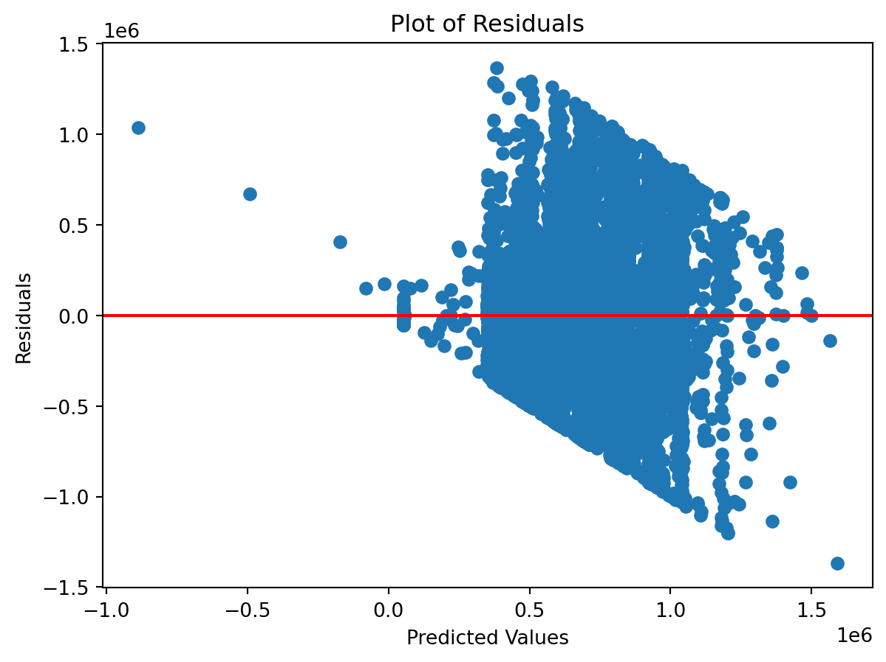
The residual plots for our final model looks acceptable.
R_squared value: 0.19761049879587889
adjusted R_squared value: 0.195360019886343
Summary Report:
OLS Regression Results
==============================================================================
Dep. Variable: sale_price R-squared: 0.198
Model: OLS Adj. R-squared: 0.195
Method: Least Squares F-statistic: 87.81
Date: Mon, 19 Dec 2022 Prob (F-statistic): 0.00
Time: 21:23:48 Log-Likelihood: -3.6274e+05
No. Observations: 25744 AIC: 7.256e+05
Df Residuals: 25671 BIC: 7.262e+05
Df Model: 72
Covariance Type: nonrobust
==========================================================================================================================================================
coef std err t P>|t| [0.025 0.975]
----------------------------------------------------------------------------------------------------------------------------------------------------------
Intercept 8.638e+05 3.7e+04 23.317 0.000 7.91e+05 9.36e+05
C(borough)[T.Bronx] -4.919e+05 3.15e+04 -15.632 0.000 -5.54e+05 -4.3e+05
C(borough)[T.Brooklyn] -1.703e+05 3.11e+04 -5.470 0.000 -2.31e+05 -1.09e+05
C(borough)[T.Queens] -2.695e+05 3.12e+04 -8.627 0.000 -3.31e+05 -2.08e+05
C(borough)[T.Staten Island] -4.167e+05 3.16e+04 -13.178 0.000 -4.79e+05 -3.55e+05
C(tax_class_at_time_of_sale)[T.2] 3.506e+05 1.27e+05 2.766 0.006 1.02e+05 5.99e+05
C(tax_class_at_time_of_sale)[T.3] 2.095e-05 1.46e-05 1.432 0.152 -7.72e-06 4.96e-05
C(tax_class_at_time_of_sale)[T.4] 4.227e+05 2.91e+05 1.450 0.147 -1.49e+05 9.94e+05
C(building_class_category)[T.02 TWO FAMILY DWELLINGS ] -1.429e+05 3.99e+04 -3.584 0.000 -2.21e+05 -6.47e+04
C(building_class_category)[T.03 THREE FAMILY DWELLINGS ] 4.369e+05 6.78e+05 0.645 0.519 -8.92e+05 1.77e+06
C(building_class_category)[T.04 TAX CLASS 1 CONDOS ] -3.628e-06 3.11e-06 -1.165 0.244 -9.73e-06 2.48e-06
C(building_class_category)[T.05 TAX CLASS 1 VACANT LAND ] -3.652e+06 2.03e+06 -1.799 0.072 -7.63e+06 3.27e+05
C(building_class_category)[T.06 TAX CLASS 1 - OTHER ] -2.719e+05 8.68e+05 -0.313 0.754 -1.97e+06 1.43e+06
C(building_class_category)[T.07 RENTALS - WALKUP APARTMENTS ] 7.645e+04 1.33e+05 0.577 0.564 -1.83e+05 3.36e+05
C(building_class_category)[T.08 RENTALS - ELEVATOR APARTMENTS ] 7.211e+05 4.2e+05 1.715 0.086 -1.03e+05 1.55e+06
C(building_class_category)[T.09 COOPS - WALKUP APARTMENTS ] -4.348e+05 3.75e+05 -1.159 0.246 -1.17e+06 3e+05
C(building_class_category)[T.10 COOPS - ELEVATOR APARTMENTS ] 2.527e+05 3.1e+05 0.815 0.415 -3.55e+05 8.6e+05
C(building_class_category)[T.11 SPECIAL CONDO BILLING LOTS ] -0.0005 0.000 -1.723 0.085 -0.001 6.31e-05
C(building_class_category)[T.11A CONDO-RENTALS ] -0.0001 6.15e-05 -2.351 0.019 -0.000 -2.41e-05
C(building_class_category)[T.12 CONDOS - WALKUP APARTMENTS ] -2.411e-06 1.69e-05 -0.143 0.887 -3.56e-05 3.07e-05
C(building_class_category)[T.13 CONDOS - ELEVATOR APARTMENTS ] -0.0003 0.000 -2.371 0.018 -0.000 -4.73e-05
C(building_class_category)[T.14 RENTALS - 4-10 UNIT ] -2.649e+05 1.83e+05 -1.444 0.149 -6.25e+05 9.47e+04
C(building_class_category)[T.15 CONDOS - 2-10 UNIT RESIDENTIAL ] -0.0001 4.64e-05 -3.076 0.002 -0.000 -5.18e-05
C(building_class_category)[T.16 CONDOS - 2-10 UNIT WITH COMMERCIAL UNIT ] -0.0002 6.27e-05 -2.842 0.004 -0.000 -5.53e-05
C(building_class_category)[T.17 CONDO COOPS ] -0.0001 4.98e-05 -2.969 0.003 -0.000 -5.03e-05
C(building_class_category)[T.18 TAX CLASS 3 - UNTILITY PROPERTIES ] -7.735e-05 3.85e-05 -2.009 0.045 -0.000 -1.89e-06
C(building_class_category)[T.21 OFFICE BUILDINGS ] 1.493e+05 3.07e+05 0.487 0.627 -4.52e+05 7.51e+05
C(building_class_category)[T.22 STORE BUILDINGS ] -6.816e+04 2.98e+05 -0.228 0.819 -6.53e+05 5.17e+05
C(building_class_category)[T.23 LOFT BUILDINGS ] 6.468e+06 3.34e+06 1.938 0.053 -7.44e+04 1.3e+07
C(building_class_category)[T.25 LUXURY HOTELS ] -6.505e-06 8.9e-06 -0.731 0.465 -2.39e-05 1.09e-05
C(building_class_category)[T.26 OTHER HOTELS ] -3.006e+06 8.87e+05 -3.389 0.001 -4.74e+06 -1.27e+06
C(building_class_category)[T.27 FACTORIES ] -1.762e+05 3.4e+05 -0.519 0.604 -8.42e+05 4.89e+05
C(building_class_category)[T.28 COMMERCIAL CONDOS ] -0.0001 5.57e-05 -2.246 0.025 -0.000 -1.6e-05
C(building_class_category)[T.29 COMMERCIAL GARAGES ] -5.209e+05 3.12e+05 -1.671 0.095 -1.13e+06 9.01e+04
C(building_class_category)[T.30 WAREHOUSES ] 4.996e+05 3.05e+05 1.639 0.101 -9.79e+04 1.1e+06
C(building_class_category)[T.31 COMMERCIAL VACANT LAND ] -1.498e+04 1.05e+04 -1.420 0.156 -3.57e+04 5697.615
C(building_class_category)[T.32 HOSPITAL AND HEALTH FACILITIES ] -2.963e+05 7.73e+05 -0.383 0.702 -1.81e+06 1.22e+06
C(building_class_category)[T.33 EDUCATIONAL FACILITIES ] -1.304e+06 6.6e+05 -1.976 0.048 -2.6e+06 -1.05e+04
C(building_class_category)[T.34 THEATRES ] 3.652e-10 9.98e-10 0.366 0.714 -1.59e-09 2.32e-09
C(building_class_category)[T.35 INDOOR PUBLIC AND CULTURAL FACILITIES ] -1.019e+06 4.2e+05 -2.430 0.015 -1.84e+06 -1.97e+05
C(building_class_category)[T.36 OUTDOOR RECREATIONAL FACILITIES ] -6.993e-10 8.6e-10 -0.813 0.416 -2.38e-09 9.86e-10
C(building_class_category)[T.37 RELIGIOUS FACILITIES ] 1.151e+05 3.88e+05 0.296 0.767 -6.46e+05 8.76e+05
C(building_class_category)[T.38 ASYLUMS AND HOMES ] -2.964e+05 4.01e+05 -0.738 0.460 -1.08e+06 4.9e+05
C(building_class_category)[T.39 TRANSPORTATION FACILITIES ] 1.617e-09 1.37e-09 1.184 0.237 -1.06e-09 4.29e-09
C(building_class_category)[T.40 SELECTED GOVERNMENTAL FACILITIES ] -3.034e-09 1.25e-09 -2.426 0.015 -5.49e-09 -5.83e-10
C(building_class_category)[T.41 TAX CLASS 4 - OTHER ] -1.065e+05 2.9e+05 -0.367 0.714 -6.76e+05 4.63e+05
C(building_class_category)[T.42 CONDO CULTURAL/MEDICAL/EDUCATIONAL/ETC ] 4.716e-09 2.02e-09 2.330 0.020 7.48e-10 8.68e-09
C(building_class_category)[T.43 CONDO OFFICE BUILDINGS ] 4.328e-09 2.16e-09 2.005 0.045 9.75e-11 8.56e-09
C(building_class_category)[T.44 CONDO PARKING ] 1.445e-09 1.54e-09 0.938 0.348 -1.57e-09 4.46e-09
C(building_class_category)[T.45 CONDO HOTELS ] 5.229e-10 4.86e-10 1.076 0.282 -4.3e-10 1.48e-09
C(building_class_category)[T.46 CONDO STORE BUILDINGS ] 3.514e-09 1.28e-09 2.749 0.006 1.01e-09 6.02e-09
C(building_class_category)[T.47 CONDO NON-BUSINESS STORAGE ] 3.245e-09 2.39e-09 1.358 0.174 -1.44e-09 7.93e-09
C(building_class_category)[T.48 CONDO TERRACES/GARDENS/CABANAS ] 3.234e-09 2.51e-09 1.290 0.197 -1.68e-09 8.15e-09
C(building_class_category)[T.49 CONDO WAREHOUSES/FACTORY/INDUS ] -3.07e-09 1.36e-09 -2.262 0.024 -5.73e-09 -4.1e-10
age -788.1452 115.929 -6.798 0.000 -1015.373 -560.917
age:C(building_class_category)[T.02 TWO FAMILY DWELLINGS ] 547.0794 149.995 3.647 0.000 253.080 841.079
age:C(building_class_category)[T.03 THREE FAMILY DWELLINGS ] 519.1482 223.171 2.326 0.020 81.720 956.577
age:C(building_class_category)[T.04 TAX CLASS 1 CONDOS ] -6.356e-11 1.09e-09 -0.058 0.953 -2.2e-09 2.07e-09
age:C(building_class_category)[T.05 TAX CLASS 1 VACANT LAND ] 6.345e+05 3.33e+05 1.904 0.057 -1.85e+04 1.29e+06
age:C(building_class_category)[T.06 TAX CLASS 1 - OTHER ] 2383.6316 9747.374 0.245 0.807 -1.67e+04 2.15e+04
age:C(building_class_category)[T.07 RENTALS - WALKUP APARTMENTS ] -123.8401 543.947 -0.228 0.820 -1190.007 942.326
age:C(building_class_category)[T.08 RENTALS - ELEVATOR APARTMENTS ] -6658.5744 2936.116 -2.268 0.023 -1.24e+04 -903.621
age:C(building_class_category)[T.09 COOPS - WALKUP APARTMENTS ] -3040.8110 3673.064 -0.828 0.408 -1.02e+04 4158.601
age:C(building_class_category)[T.10 COOPS - ELEVATOR APARTMENTS ] -8329.0083 4043.367 -2.060 0.039 -1.63e+04 -403.781
age:C(building_class_category)[T.11 SPECIAL CONDO BILLING LOTS ] 9.868e-11 3.13e-10 0.316 0.752 -5.14e-10 7.11e-10
age:C(building_class_category)[T.11A CONDO-RENTALS ] -1.85e-09 1e-09 -1.850 0.064 -3.81e-09 1.1e-10
age:C(building_class_category)[T.12 CONDOS - WALKUP APARTMENTS ] -2.455e-09 1.37e-09 -1.793 0.073 -5.14e-09 2.29e-10
age:C(building_class_category)[T.13 CONDOS - ELEVATOR APARTMENTS ] 5.4e-10 3.14e-10 1.721 0.085 -7.49e-11 1.15e-09
age:C(building_class_category)[T.14 RENTALS - 4-10 UNIT ] -1231.5473 1354.471 -0.909 0.363 -3886.387 1423.293
age:C(building_class_category)[T.15 CONDOS - 2-10 UNIT RESIDENTIAL ] -1.015e-09 4.69e-10 -2.167 0.030 -1.93e-09 -9.68e-11
age:C(building_class_category)[T.16 CONDOS - 2-10 UNIT WITH COMMERCIAL UNIT ] 2.34e-09 9.01e-10 2.598 0.009 5.74e-10 4.1e-09
age:C(building_class_category)[T.17 CONDO COOPS ] -9.05e-10 3.72e-10 -2.433 0.015 -1.63e-09 -1.76e-10
age:C(building_class_category)[T.18 TAX CLASS 3 - UNTILITY PROPERTIES ] 5.421e-10 2.75e-10 1.971 0.049 3.13e-12 1.08e-09
age:C(building_class_category)[T.21 OFFICE BUILDINGS ] -3664.0534 1335.649 -2.743 0.006 -6282.001 -1046.106
age:C(building_class_category)[T.22 STORE BUILDINGS ] 143.8434 838.381 0.172 0.864 -1499.431 1787.118
age:C(building_class_category)[T.23 LOFT BUILDINGS ] -6.129e+04 3.58e+04 -1.713 0.087 -1.31e+05 8829.350
age:C(building_class_category)[T.25 LUXURY HOTELS ] 0 0 nan nan 0 0
age:C(building_class_category)[T.26 OTHER HOTELS ] 2.307e+04 3909.779 5.900 0.000 1.54e+04 3.07e+04
age:C(building_class_category)[T.27 FACTORIES ] 1336.2624 2372.315 0.563 0.573 -3313.609 5986.134
age:C(building_class_category)[T.28 COMMERCIAL CONDOS ] 0 0 nan nan 0 0
age:C(building_class_category)[T.29 COMMERCIAL GARAGES ] 2371.9002 1232.388 1.925 0.054 -43.649 4787.449
age:C(building_class_category)[T.30 WAREHOUSES ] -3391.0008 1104.810 -3.069 0.002 -5556.490 -1225.512
age:C(building_class_category)[T.31 COMMERCIAL VACANT LAND ] -8.987e+04 6.33e+04 -1.420 0.156 -2.14e+05 3.42e+04
age:C(building_class_category)[T.32 HOSPITAL AND HEALTH FACILITIES ] 4835.0406 8564.899 0.565 0.572 -1.2e+04 2.16e+04
age:C(building_class_category)[T.33 EDUCATIONAL FACILITIES ] 2.06e+04 7758.249 2.655 0.008 5389.773 3.58e+04
age:C(building_class_category)[T.34 THEATRES ] 0 0 nan nan 0 0
age:C(building_class_category)[T.35 INDOOR PUBLIC AND CULTURAL FACILITIES ] 1795.8697 4134.950 0.434 0.664 -6308.866 9900.605
age:C(building_class_category)[T.36 OUTDOOR RECREATIONAL FACILITIES ] 0 0 nan nan 0 0
age:C(building_class_category)[T.37 RELIGIOUS FACILITIES ] -815.8526 2833.461 -0.288 0.773 -6369.595 4737.890
age:C(building_class_category)[T.38 ASYLUMS AND HOMES ] -2.904e+04 1.47e+04 -1.982 0.047 -5.78e+04 -324.023
age:C(building_class_category)[T.39 TRANSPORTATION FACILITIES ] 0 0 nan nan 0 0
age:C(building_class_category)[T.40 SELECTED GOVERNMENTAL FACILITIES ] 0 0 nan nan 0 0
age:C(building_class_category)[T.41 TAX CLASS 4 - OTHER ] 997.1693 5869.885 0.170 0.865 -1.05e+04 1.25e+04
age:C(building_class_category)[T.42 CONDO CULTURAL/MEDICAL/EDUCATIONAL/ETC ] 0 0 nan nan 0 0
age:C(building_class_category)[T.43 CONDO OFFICE BUILDINGS ] 0 0 nan nan 0 0
age:C(building_class_category)[T.44 CONDO PARKING ] 0 0 nan nan 0 0
age:C(building_class_category)[T.45 CONDO HOTELS ] 0 0 nan nan 0 0
age:C(building_class_category)[T.46 CONDO STORE BUILDINGS ] 0 0 nan nan 0 0
age:C(building_class_category)[T.47 CONDO NON-BUSINESS STORAGE ] 0 0 nan nan 0 0
age:C(building_class_category)[T.48 CONDO TERRACES/GARDENS/CABANAS ] 0 0 nan nan 0 0
age:C(building_class_category)[T.49 CONDO WAREHOUSES/FACTORY/INDUS ] 0 0 nan nan 0 0
total_units 7.256e+04 1.72e+04 4.227 0.000 3.89e+04 1.06e+05
total_units:C(building_class_category)[T.02 TWO FAMILY DWELLINGS ] 5.85e+04 2.4e+04 2.435 0.015 1.14e+04 1.06e+05
total_units:C(building_class_category)[T.03 THREE FAMILY DWELLINGS ] -1.332e+05 2.26e+05 -0.588 0.556 -5.77e+05 3.11e+05
total_units:C(building_class_category)[T.04 TAX CLASS 1 CONDOS ] 0 0 nan nan 0 0
total_units:C(building_class_category)[T.05 TAX CLASS 1 VACANT LAND ] -6.474e+04 4.13e+04 -1.567 0.117 -1.46e+05 1.62e+04
total_units:C(building_class_category)[T.06 TAX CLASS 1 - OTHER ] -1.319e+05 3.51e+05 -0.375 0.707 -8.21e+05 5.57e+05
total_units:C(building_class_category)[T.07 RENTALS - WALKUP APARTMENTS ] -7.394e+04 1.72e+04 -4.296 0.000 -1.08e+05 -4.02e+04
total_units:C(building_class_category)[T.08 RENTALS - ELEVATOR APARTMENTS ] -8.668e+04 2.11e+04 -4.113 0.000 -1.28e+05 -4.54e+04
total_units:C(building_class_category)[T.09 COOPS - WALKUP APARTMENTS ] -7.398e+04 1.74e+04 -4.257 0.000 -1.08e+05 -3.99e+04
total_units:C(building_class_category)[T.10 COOPS - ELEVATOR APARTMENTS ] -7.716e+04 1.72e+04 -4.493 0.000 -1.11e+05 -4.35e+04
total_units:C(building_class_category)[T.11 SPECIAL CONDO BILLING LOTS ] 0 0 nan nan 0 0
total_units:C(building_class_category)[T.11A CONDO-RENTALS ] 0 0 nan nan 0 0
total_units:C(building_class_category)[T.12 CONDOS - WALKUP APARTMENTS ] 0 0 nan nan 0 0
total_units:C(building_class_category)[T.13 CONDOS - ELEVATOR APARTMENTS ] 0 0 nan nan 0 0
total_units:C(building_class_category)[T.14 RENTALS - 4-10 UNIT ] 1.268e+04 2.42e+04 0.525 0.600 -3.47e+04 6e+04
total_units:C(building_class_category)[T.15 CONDOS - 2-10 UNIT RESIDENTIAL ] 0 0 nan nan 0 0
total_units:C(building_class_category)[T.16 CONDOS - 2-10 UNIT WITH COMMERCIAL UNIT ] 0 0 nan nan 0 0
total_units:C(building_class_category)[T.17 CONDO COOPS ] 0 0 nan nan 0 0
total_units:C(building_class_category)[T.18 TAX CLASS 3 - UNTILITY PROPERTIES ] 0 0 nan nan 0 0
total_units:C(building_class_category)[T.21 OFFICE BUILDINGS ] -7.787e+04 1.84e+04 -4.231 0.000 -1.14e+05 -4.18e+04
total_units:C(building_class_category)[T.22 STORE BUILDINGS ] -8.333e+04 1.74e+04 -4.776 0.000 -1.18e+05 -4.91e+04
total_units:C(building_class_category)[T.23 LOFT BUILDINGS ] -1.362e+05 3.61e+04 -3.776 0.000 -2.07e+05 -6.55e+04
total_units:C(building_class_category)[T.25 LUXURY HOTELS ] 0 0 nan nan 0 0
total_units:C(building_class_category)[T.26 OTHER HOTELS ] 5.134e+05 4.33e+05 1.185 0.236 -3.36e+05 1.36e+06
total_units:C(building_class_category)[T.27 FACTORIES ] -6.395e+04 8.73e+04 -0.733 0.464 -2.35e+05 1.07e+05
total_units:C(building_class_category)[T.28 COMMERCIAL CONDOS ] 0 0 nan nan 0 0
total_units:C(building_class_category)[T.29 COMMERCIAL GARAGES ] 8.631e+04 5.7e+04 1.514 0.130 -2.54e+04 1.98e+05
total_units:C(building_class_category)[T.30 WAREHOUSES ] -1.939e+05 5.33e+04 -3.634 0.000 -2.98e+05 -8.93e+04
total_units:C(building_class_category)[T.31 COMMERCIAL VACANT LAND ] -2.996e+04 2.11e+04 -1.420 0.156 -7.13e+04 1.14e+04
total_units:C(building_class_category)[T.32 HOSPITAL AND HEALTH FACILITIES ] -9.219e+04 4.94e+04 -1.867 0.062 -1.89e+05 4600.617
total_units:C(building_class_category)[T.33 EDUCATIONAL FACILITIES ] -7.422e+05 3.61e+05 -2.054 0.040 -1.45e+06 -3.38e+04
total_units:C(building_class_category)[T.34 THEATRES ] 0 0 nan nan 0 0
total_units:C(building_class_category)[T.35 INDOOR PUBLIC AND CULTURAL FACILITIES ] 3.286e+05 1.86e+05 1.765 0.078 -3.63e+04 6.94e+05
total_units:C(building_class_category)[T.36 OUTDOOR RECREATIONAL FACILITIES ] 0 0 nan nan 0 0
total_units:C(building_class_category)[T.37 RELIGIOUS FACILITIES ] -2.803e+05 1.34e+05 -2.085 0.037 -5.44e+05 -1.68e+04
total_units:C(building_class_category)[T.38 ASYLUMS AND HOMES ] 9.258e+04 1.29e+05 0.719 0.472 -1.6e+05 3.45e+05
total_units:C(building_class_category)[T.39 TRANSPORTATION FACILITIES ] 0 0 nan nan 0 0
total_units:C(building_class_category)[T.40 SELECTED GOVERNMENTAL FACILITIES ] 0 0 nan nan 0 0
total_units:C(building_class_category)[T.41 TAX CLASS 4 - OTHER ] -1.065e+05 2.9e+05 -0.367 0.714 -6.76e+05 4.63e+05
total_units:C(building_class_category)[T.42 CONDO CULTURAL/MEDICAL/EDUCATIONAL/ETC ] 0 0 nan nan 0 0
total_units:C(building_class_category)[T.43 CONDO OFFICE BUILDINGS ] 0 0 nan nan 0 0
total_units:C(building_class_category)[T.44 CONDO PARKING ] 0 0 nan nan 0 0
total_units:C(building_class_category)[T.45 CONDO HOTELS ] 0 0 nan nan 0 0
total_units:C(building_class_category)[T.46 CONDO STORE BUILDINGS ] 0 0 nan nan 0 0
total_units:C(building_class_category)[T.47 CONDO NON-BUSINESS STORAGE ] 0 0 nan nan 0 0
total_units:C(building_class_category)[T.48 CONDO TERRACES/GARDENS/CABANAS ] 0 0 nan nan 0 0
total_units:C(building_class_category)[T.49 CONDO WAREHOUSES/FACTORY/INDUS ] 0 0 nan nan 0 0
gross_square_feet 2.3535 0.374 6.291 0.000 1.620 3.087
==============================================================================
Omnibus: 1175.323 Durbin-Watson: 1.085
Prob(Omnibus): 0.000 Jarque-Bera (JB): 1760.809
Skew: 0.420 Prob(JB): 0.00
Kurtosis: 3.967 Cond. No. 1.01e+16
==============================================================================
Notes:
[1] Standard Errors assume that the covariance matrix of the errors is correctly specified.
[2] The smallest eigenvalue is 1.67e-19. This might indicate that there are
strong multicollinearity problems or that the design matrix is singular.The final linear model R-Squared value has dropped to 19.8%, which is definitely not acceptable for predicting a marketing continuous data like property sales price. Moreover, we can’t see the AIC and BIC change a lot compare with our previous model, which is also extremely high.
Thus, finally we concluded that:
- Though we have some significant coefficients in our fitting summary, the response variable sale_price can be hardly explained with this model structure by using Linear Regression, and we will keep trying other types of models.
Decision Tree
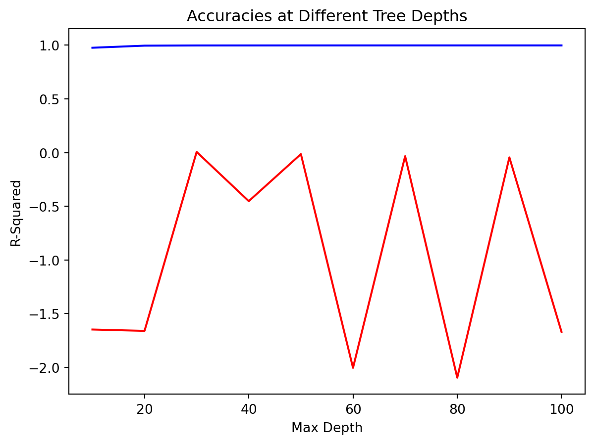
- On checking R squared value for different depths of tree, accuracy fluctuated a lot and not giving a pattern. So no judgement can given by the decision tree regressor for our dataset.
Random Forest
Random forest being a very strong modeling technique, gave better results than the previous models.
We tried to run random forest using different permutations and combinations of hyperparameters.
The best score model is as following
Training score: 0.6440346429343455
Testing score: 0.2890256072033246We got the score of around 29% which is not good enough for sales price prediction but it is better than the previous techniques.
Plotting Variable Importance Plot
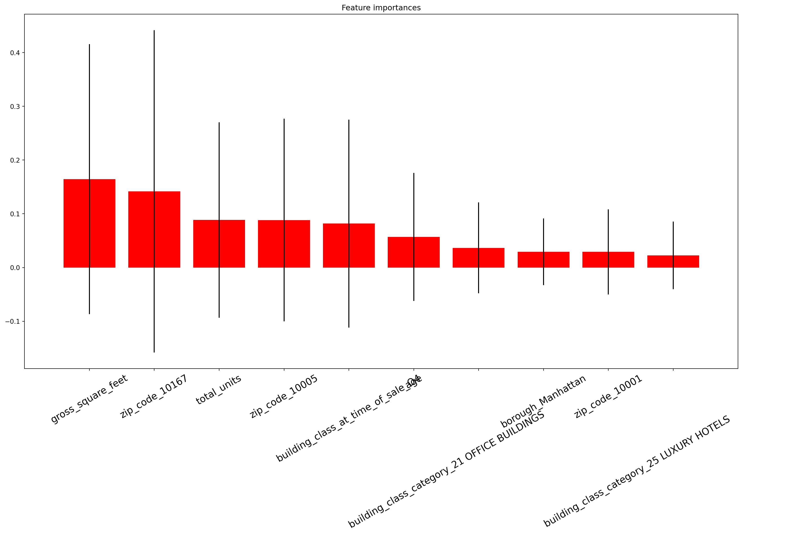
- From the feature importance plot, we can see that as per the random forest model, gross_square_feet, particular zip code classes and total_units have a very strong impact on the overall score.
K-Nearest Neighbor
As per professor’s feedback on our presentation, we tried K-Nearest Neighbor algorithm.
Since, real estate brokers, agents, and people who want to buy a property knowingly or unknowingly follow K-NN approach to find the best property for them.
So, using this approach for sales price prediction models makes sense to follow to logic of these people in the real estate market.
Text(0, 0.5, 'score')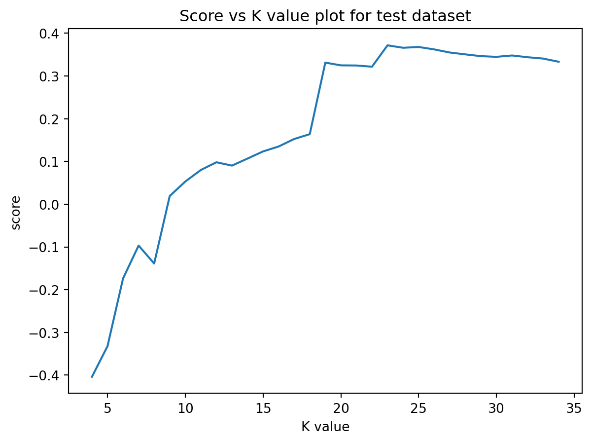
- From the plot, R-squared score is negative initially and increasing with increasing K value at around 35% score, score values is getting saturated.
- Best test score is achieved at K value of 23.
Score at k = 23: 0.37172987602193475- We got the maximum score of around 37% at the k value of 23.
CONCLUSION
This project has shown various aspects of predicting the sale price of real estate in New York City. Overall, it proved difficult for us to develop a strong and reliable model to predict sale price. We encountered many challenges in our data, such as missing data points and skewed data. However, we managed to make the following conclusions:
- Sales price was highly dependent on location type variables like boroughs.
- Sales price was highly dependent on the gross_square_feet of the property.
- Sales price was highly dependent on the tax class of the property.
- Different models like linear regression, decision tree, random forest, and KNN gave different R squared score.
- K-Nearest Neighbor performed best on our dataset with a score of 37%.
It is important to note that this data is only from a one-year period about five years ago. It would be interesting to see how these models would work using more recent data. The New York City real estate market is very lucrative, especially since the COVID-19 pandemic. Seeing how this has changed would be interesting to investigate. Finally, this data is only for New York City, and our results would likely vary if we used similar methods on data from other cities, such as DC.
Despite the challenges we encountered, our analysis provided us with interesting information about the real estate market in New York City, which allowed us to gain insight into what factors affect the market the most.